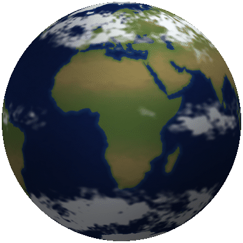

Earth is only the fifth largest planet in the solar system, it is the only planet in our solar system with liquid water on the surface. Just slightly larger than nearby Venus, Earth is the biggest of the four planets closest to the Sun, all of which are made of rock and metal.
Earth is the only planet in the solar system whose English name does not come from Greek or Roman mythology. The name was taken from Old English and Germanic. It simply means "the ground." There are, of course, many names for our planet in the thousands of languages spoken by the people of the third planet from the Sun.
Namesake
The name Earth is about 1,000 years old. All of the planets except Earth were named after Greek and Roman gods and goddesses. The name Earth is a Germanic word, which simply means "the ground."
Potential for life
Earth has a very hospitable temperature and mix of chemicals that have made life abundant here. Most notably, Earth is unique in that most of our planet is covered in liquid water, since the temperature allows liquid water to exist for extended periods of time. Earth's vast oceans provided a convenient place for life to begin about 3.8 billion years ago.
Some of the features of our planet that make it great for sustaining life are changing due to the ongoing effects of climate change.
Size and distance
With an equatorial diameter of 7,926 miles (12,756 kilometers), Earth is the biggest of the terrestrial planets and the fifth largest planet in our solar system.
From an average distance of 93 million miles (150 million kilometers), Earth is exactly one astronomical unit away from the Sun, because one astronomical unit is defined as the distance from the Sun to Earth. This unit provides an easy way to quickly compare planets' distances from the Sun.
It takes about eight minutes for light from the Sun to reach our planet.
Orbit and rotation
As Earth orbits the Sun, it completes one rotation every 23.9 hours. It takes 365.25 days to complete one trip around the Sun. That extra quarter of a day presents a challenge to our calendar system, which counts one year as 365 days. To keep our yearly calendars consistent with our orbit around the Sun, every four years we add one day. That day is called a leap day, and the year it is added to is called a leap year.
Earth's axis of rotation is tilted 23.4 degrees with respect to the plane of its orbit around the Sun. This tilt causes our yearly cycle of seasons. During part of the year, the northern hemisphere is tilted toward the Sun and the southern hemisphere is tilted away. With the Sun higher in the sky, solar heating is greater in the north, producing summer there. Less direct solar heating produces winter in the south. Six months later the situation is reversed. When spring and fall begin, both hemispheres receive roughly equal amounts of heat from the Sun.
Moons
Earth is the only planet in our solar system with exactly one moon. Our Moon is the brightest and most familiar object in the night sky. In many ways, the Moon is responsible for making Earth such a great home. It stabilizes our planet's wobble, which has made the climate less variable over thousands of years.
Earth sometimes temporarily hosts orbiting asteroids or large rocks. They are typically trapped by Earth's gravity for a few months or years before returning to an orbit around the Sun. Some asteroids will be in a long dance with Earth as both orbit the Sun.
Some moons are bits of rock that were captured by a planet's gravity, but our Moon is likely the result of a collision billions of years ago. When Earth was a young planet, a large chunk of rock smashed into it, displacing a portion of Earth's interior. The resulting chunks clumped together and formed our Moon. With a radius of 1,080 miles (1,738 kilometers), the Moon is the fifth largest moon in our solar system, after Ganymede, Titan, Callisto, and Io.
The Moon is an average of 238,855 miles (384,400 kilometers) away from Earth. That means 30 Earth-sized planets could fit in between Earth and its Moon.
Rings
Earth has no rings.
Formation
When the solar system settled into its current layout about 4.5 billion years ago, Earth formed as gravity pulled swirling gas and dust in to become the third planet from the Sun. Like its fellow terrestrial planets, Earth has a central core, a rocky mantle, and a solid crust.
Structure
Earth is composed of four main layers, starting with an inner core at the planet's center, enveloped by the outer core, mantle, and crust.
The inner core is a solid sphere made of iron and nickel metals, about 759 miles (1,221 kilometers) in radius. There the temperature is as high as 9,800 degrees Fahrenheit (5,400 degrees Celsius). Surrounding the inner core is the outer core, a layer about 1,400 miles (2,300 kilometers) thick, made of iron and nickel fluids.
In between the outer core and crust is the mantle, the thickest layer. This hot, viscous mixture of molten rock is about 1,800 miles (2,900 kilometers) thick and has the consistency of caramel. The outermost layer, Earth's crust, goes about 19 miles (30 kilometers) deep on average on land. At the bottom of the ocean the crust is thinner, extending about 3 miles (5 kilometers) from the seafloor to the top of the mantle.
Surface
Like Mars and Venus, Earth has volcanoes, mountains, and valleys. Earth's lithosphere, which includes the crust — both continental and oceanic — and the upper mantle, is divided into huge plates that are constantly moving. The North American plate, for example, moves west over the Pacific Ocean basin roughly at a rate equal to the growth of our fingernails. Earthquakes result when plates grind past one another, ride up over one another, collide to make mountains, or split and separate.
Earth's global ocean, which covers about 71 percent of the planet's surface, has an average depth of about 2.3 miles (3.6 kilometers) and contains 97 percent of Earth's water. Almost all of Earth's volcanoes are hidden under these oceans. Hawaii's Mauna Kea volcano is taller from base to summit than Mount Everest, but most of it is underwater. Earth's longest mountain range is also underwater, at the bottom of the Arctic and Atlantic oceans. It is four times longer than the Andes, Rockies, and Himalayas combined.
Atmosphere
Near the surface, Earth has an atmosphere that consists of 78 percent nitrogen, 21 percent oxygen, and 1 percent other gases such as argon, carbon dioxide, and neon. The atmosphere affects Earth's long-term climate and short-term local weather, and shields us from much of the harmful radiation coming from the Sun. It also protects us from meteoroids, most of which burn up in the atmosphere — seen as meteors in the night sky — before they can strike the surface as meteorites.
Magnetosphere
Our planet's rapid rotation and molten nickel-iron core give rise to a magnetic field, which the solar wind distorts into a teardrop shape in space. The solar wind is a stream of charged particles continuously ejected from the Sun. When charged particles from the solar wind become trapped in Earth's magnetic field, they collide with air molecules above our planet's magnetic poles. These air molecules then begin to glow and cause aurorae, the northern and southern lights.
The magnetic field is what causes compass needles to point to the North Pole regardless of which way you turn. But the magnetic polarity of Earth can change, flipping the direction of the magnetic field. The geologic record tells scientists that a magnetic reversal takes place about every 300,000 years on average, but the timing is very irregular. As far as we know, such a reversal does not cause any harm to life on Earth, and one is very unlikely to happen for at least another thousand years. But when it does happen, compass needles are likely to point in many different directions for a few centuries while the switch is being made. After the switch is complete, they will all point south instead of north.